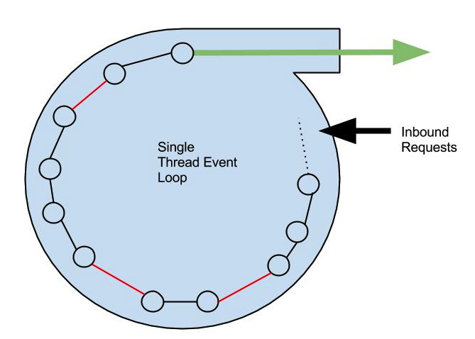

Outline
- UI
- API
- Widgets
- UI Stack
- API Stack
- Git Deploy
- Event Loop
- Wins
UI Stack
- Backbone.js - MVC (backbonejs.org/)
- Require.js - AMD Module framework. (requirejs.org)
- Moment.js - Javascript date library. (momentjs.com)
- Underscore.js - Javascript utility library (underscorejs.org)
- Layout Manager - Backbone library (https://github.com/tbranyen/backbone.layoutmanager)
API Stack
- Node.js
- NPM - Node Package Manager (npmjs.org)
- Express.js - Lightweight HTTP framework. (expressjs.com)
- Swagger UI - Restful API framework. (https://developers.helloreverb.com/swagger/)
- Underscore.js - Javascript utility library (underscorejs.org/)
- Grunt.js - Build and deployment project (gruntjs.com)
- Moment.js - Date library. (momentjs.com)
- NodeFly - Third party monitoring service (nodefly.com)
Git Deploy
- Git - Uses remotes and SSH to for deployment
- Gitolite - Project installed on the AWS instance. Handles SSH and permissions for different users.
- Post Receive Hook - Handle git pushs. Create a build and runs npm and restart.
git push aws master
What is the node event loop?

- Node is single threaded.
- Binds directly to a port.
- All code must be non-blocking; db, file, search etc.
- All code resides in memory at startup.
- Developer must handle all exceptions and errors.
Wins
- Grunt - Simplifies JS deployments with min, mincss, concat and require.
- Nodefly - Gave visibility into the event loop.
- Swagger UI - Gives the API a user friendly interface.
- Underscore.js / Moment - Works in both client and browser.
- Git Deployment - Fast and secure
- Extreme Speed - Avg. response is under 30ms.
←
→
/
#